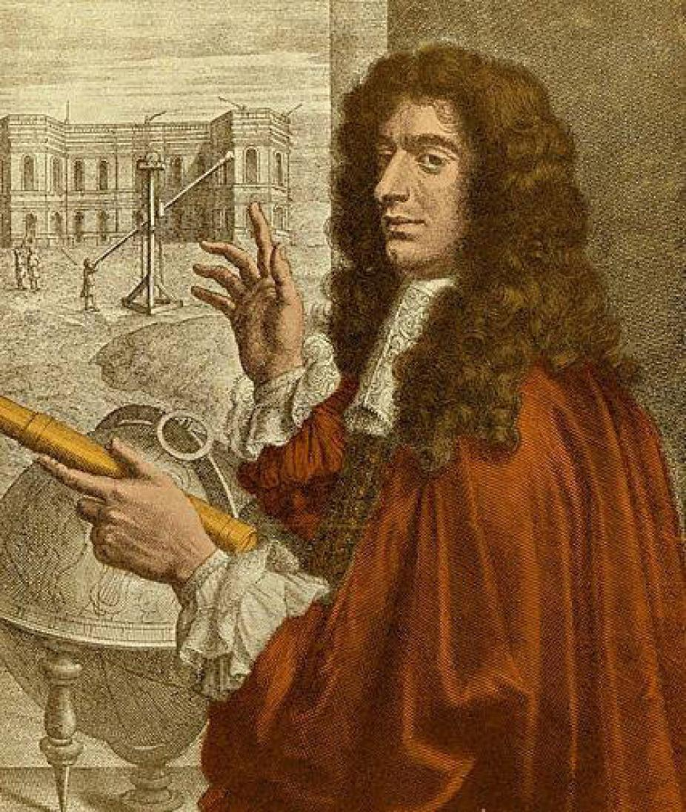

Rings:
- • Saturn's rings are thought to be pieces of comets, asteroids, or shattered moons that broke up before they reached the planet, torn apart by Saturn's powerful gravity. They are made of billions of small chunks of ice and rock coated with other materials such as dust. The ring particles mostly range from tiny, dust-sized icy grains to chunks as big as a house. A few particles are as large as mountains. The rings would look mostly white if you looked at them from the cloud tops of Saturn, and interestingly, each ring orbits at a different speed around the planet.
- • Saturn's ring system extends up to 175,000 miles (282,000 kilometers) from the planet, yet the vertical height is typically about 30 feet (10 meters) in the main rings. Named alphabetically in the order they were discovered, the rings are relatively close to each other, with the exception of a gap measuring 2,920 miles (4,700 kilometers) in width called the Cassini Division that separates Rings A and B. The main rings are A, B, and C. Rings D, E, F, and G are fainter and more recently discovered.
- • Starting at Saturn and moving outward, there is the D ring, C ring, B ring, Cassini Division, A ring, F ring, G ring, and finally, the E ring. Much farther out, there is the very faint Phoebe ring in the orbit of Saturn's moon Phoebe.
- • Saturn is home to a vast array of intriguing and unique worlds. From the haze-shrouded surface of Titan to crater-riddled Phoebe, each of Saturn's moons tells another piece of the story surrounding the Saturn system. As of June 8, 2023, Saturn has 146 moons in its orbit, with others continually awaiting confirmation of their discovery and official naming by the International Astronomical Union (IAU).
- • The Saturn system teems with natural satellites, from planet-sized Titan to small oddballs, shaped like potatoes or ravioli.
- • As of June 8, 2023, Saturn has 146 moons in its orbit. The moons range in size from larger than the planet Mercury – the giant moon Titan – to as small as a sports arena. The small moon Enceladus has a global ocean under a thick, icy shell. Scientists have identified both moons as high-priority science destinations for future deep space missions.
Saturn's moons shape, contribute to, and also collect material from Saturn's rings and magnetosphere.
- • The surface gravity on Saturn is about 107% of the surface gravity on Earth, so if you weigh 100 pounds on Earth, you would weigh 107 pounds on Saturn (assuming you could find someplace to, well, stand).
- • Saturn is one of five planets able to be seen with the naked eye.
- • The most common nickname for Saturn is “The Ringed Planet”
- • Saturn gives off more energy than it receives from the Sun. This unusual quality is believed to be generated from the gravitational compression of the planet combined with the friction from large amount of helium found within its atmosphere.
- • Saturn has the fastest winds of any other planet in our solar system.
- • Saturn is the least dense planet in the solar system.

Moons

Gravity
Fun Facts

About Saturn:
- • Saturn is the sixth planet from the Sun and the second largest planet in our solar system. Adorned with a dazzling system of icy rings, Saturn is unique among the planets. It is not the only planet to have rings, but none are as spectacular or as complex as Saturn's. Like fellow gas giant Jupiter, Saturn is a massive ball made mostly of hydrogen and helium. Saturn also has dozens of moons.
- • The farthest planet from Earth discovered by the unaided human eye, Saturn has been known since ancient times. The planet is named for the Roman god of agriculture and wealth (Saturn), who was also the father of Jupiter.
- • Saturn has been known since prehistoric times because it is easily visible to the naked eye. Not until the invention of the telescope, however, did people observe Saturn's magnificent rings. Galileo Galilei was the first to observe Saturn with a telescope in 1610. Because of the crudeness of his telescope, he couldn't determine what the rings were. He incorrectly guessed that there were two large moons on either side of Saturn. Two years later when he viewed Saturn again, the "moons" had disappeared. We know now this is because Galileo was viewing the rings edge-on so that they were invisible, but at the time it was very confusing to Galileo. After another two years, Galileo viewed Saturn again and found that the "moons" had returned. He concluded that the rings were "arms" of some sort.
- • Many years later, in 1659, a Dutch astronomer named Christiaan Huygens solved the mystery of Saturn's "arms." Because of improved telescope optics, he correctly deduced that the "arms" were actually a ring system. Huygens also discovered Saturn's moon, Titan, and for this reason, the probe exploring Titan is named after him.
- • A few years after Huygens' discoveries, an Italian-French astronomer by the name of Jean- Dominique Cassini discovered 4 other major moons of Saturn: Iapetus, Rhea, Tethys, and Dione. In 1675, Cassini discovered a narrow gap that splits Saturn's ring system into two parts, and the gap has since been known as the "Cassini Division." Because of his numerous contributions to our knowledge about the planet Saturn, Cassini was chosen as the name of the spacecraft flying to Saturn.
- • As a gas giant, Saturn doesn’t have a true surface. The planet is mostly swirling gases and liquids deeper down. While a spacecraft would have nowhere to land on Saturn, it wouldn’t be able to fly through unscathed either. The extreme pressures and temperatures deep inside the planet would crush, melt, and vaporize any spacecraft trying to fly into the planet.
- •Saturn is blanketed with clouds that appear as faint stripes, jet streams, and storms. The planet is many different shades of yellow, brown, and gray.
- • Winds in the upper atmosphere reach 1,600 feet per second (500 meters per second) in the equatorial region. In contrast, the strongest hurricane-force winds on Earth top out at about 360 feet per second (110 meters per second). And the pressure – the same kind you feel when you dive deep underwater – is so powerful it squeezes gas into a liquid.
- • Saturn's north pole has an interesting atmospheric feature – a six-sided jet stream. This hexagon-shaped pattern was first noticed in images from the Voyager I spacecraft and has been more closely observed by the Cassini spacecraft since. Spanning about 20,000 miles (30,000 kilometers) across, the hexagon is a wavy jet stream of 200-mile-per-hour winds (about 322 kilometers per hour) with a massive, rotating storm at the center. There is no weather feature like it anywhere else in the solar system.
- • Like Jupiter, Saturn is made mostly of hydrogen and helium. At Saturn's center is a dense core of metals like iron and nickel surrounded by rocky material and other compounds solidified by intense pressure and heat. It is enveloped by liquid metallic hydrogen inside a layer of liquid hydrogen –similar to Jupiter's core but considerably smaller.
- • It's hard to imagine, but Saturn is the only planet in our solar system with an average density that is less than water. The giant gas planet could float in a bathtub if such a colossal thing existed.
 |
Discovery:
 |
| Christiaan Huygens |  | Giovanni Domenico Cassini |
Surface & Atmosphere:

Structure/ Composition: